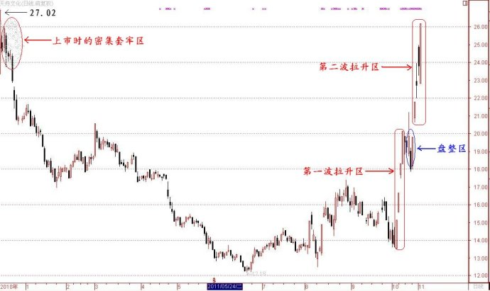
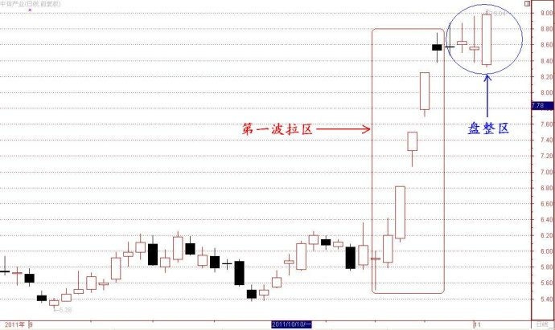

第42篇•天舟文化、中体产业还会再涨吗？
谷为陵
天舟文化（300148）和中体产业（600158）是本轮反弹行情的两只龙头股。由于这两只股票的暴涨，点燃了整个文化产业板块，使得该板块所属个股黑马狂奔。我在《研判股市的一种实用方法》博文中指出，在一轮上升行情中，若龙头股涨势未止，那么，股指涨势还将会延续。
从目前情况看，天舟文化今天又一次涨停，强势特征依旧。正是在这只龙头股的带领下，今天文化传媒板块中的博瑞传播、浙报传媒、中文传媒、广电网络、中视传媒、中南传媒、出版传媒等也封上了涨停板。文化传媒板块大有整体启动之势。现在的问题是，天舟文化、中体产业还会再涨吗？
先说说天舟文化。按照“倍数压力原则”，当一只股票股价涨幅达到1倍时，一般会受到获利盘的变现压力，股价往往会出现调整。天舟文化的股价自10月12日的13.5元启动以来，股价接过两波拉升，已经涨到今天的26.2元，几乎翻了一倍。现在该股股价离上市当日的最高价27元只有一步之遥，已经进入密集套牢区。也就是说，该股在此价位会受到获利盘和套牢盘的双重的打压，短线压力显现。下面是该股自上市后的日K线图：

我认为该股在27元附近会遇到极大的阻力，股价在此价格进行盘整的可能性极大。若该股在此价位区域盘整，那么，盘整的时间应该不会短。若该股能够冲破27元，那么，仍会有进一步上冲的动力。届时，制约该股股价的因素将不是技术面，而是基本面，是该股的合理估值能够支撑其股价在什么价位。
再说说中体产业。中体产业的股价是自10月20日启动的，其股价启动要比天舟文化晚，这说明天舟文化是当之无愧的第一号龙头股，而中体产业只能算是第二号龙头股。中体产业股价走势有两个特点：一是涨势猛，在拉升阶段出现了连续三个涨停板；二是换手率高，该股这几天在平台盘整期间日均换手率都在20%左右，这对于一个流通盘高达6.5亿股的“准大盘股”来说是非常可观的。下面是该股的日K线图：

天舟文化的主升浪有两拨拉升阶段，而中体产业目前只有一波拉升。中体产业在平台上的换手率极高，且股价波动幅度很小，这都说明该股现在处于强势振荡之中。若天舟文化股价能够在高位盘住，而中体产业也能够在此平台上站住，且其日均换手率仍然保持在15%至20%以上，那么，中体产业极有可能接过天舟文化的龙头股接力棒，在此平台盘整完毕后，该股股价进入第二波拉升的可能性很大。由于该股流通盘很大，预计会在此平台盘整较长的时间，等待10日线上移。在5日线与10日线即将形成高位死叉的时候，应该是该股股价选择突破方向的临界点。假若选择向上，那么，就会有一波涨幅在30%左右的上涨行情；假若选择向下，那么，该股目前的平台将会是一个中期的顶部。还是那句话，不要去预测，而是要观察。
我认为，中体产业是大盘强弱与否的试金石——若该股股价向上突破，那么，大盘将会有一波中级上涨行情；若该股股价向下突破，形成短期头部，那么，大盘本轮反弹也就接近尾声了。